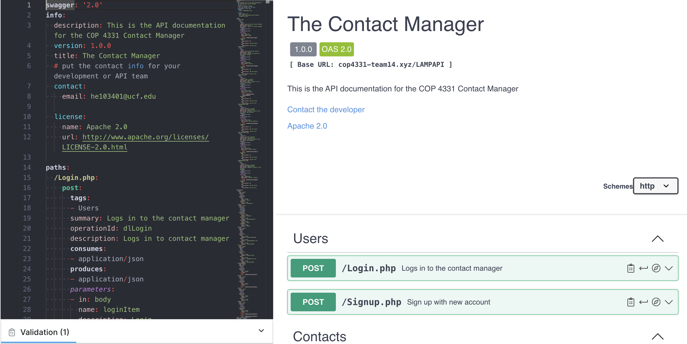

Contact Manager
Designed and developed a web-based application enabling user registration and login to organize contacts
- Managed schedules and responsibilities to meet project deadlines and maintain high standards
- Project Manager for a group of five peers using Agile methodology
- Prepared and delivered final presentation to professor and peers, including a Gantt Chart and Use Case Diagram
Skills I learned:
- Basic LAMP stack methodologies
- How to lead a team on a small scale